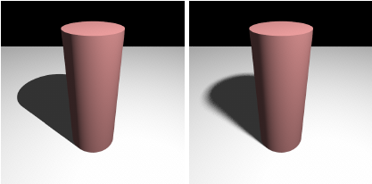
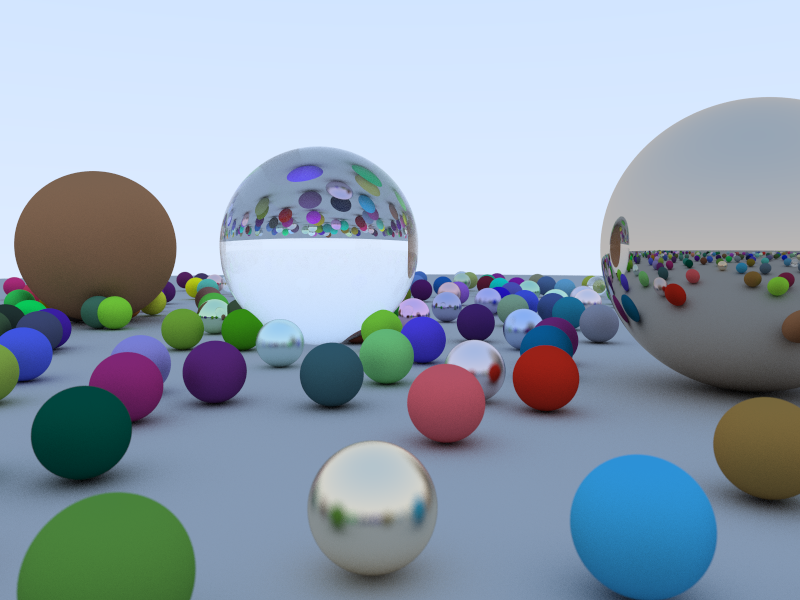
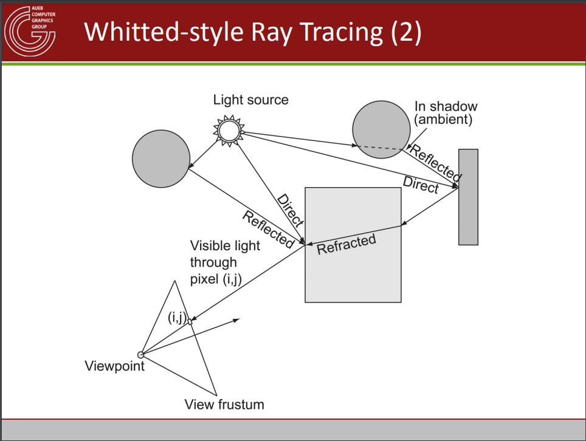
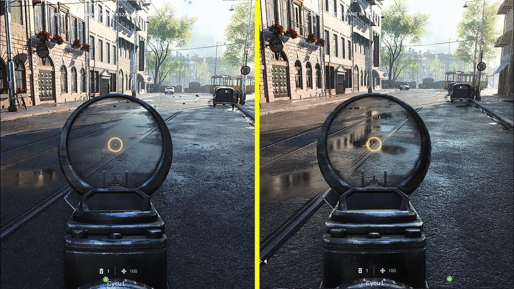
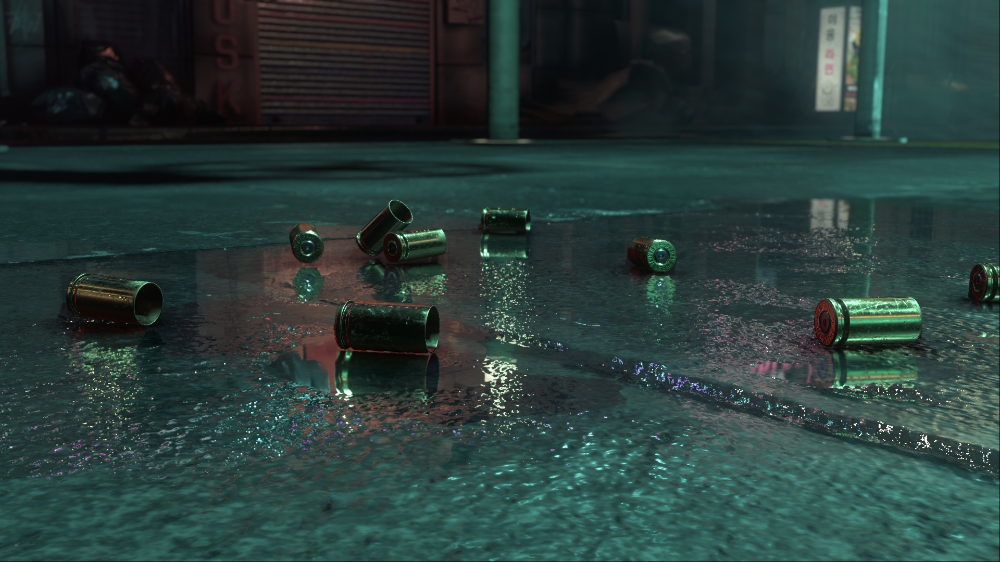
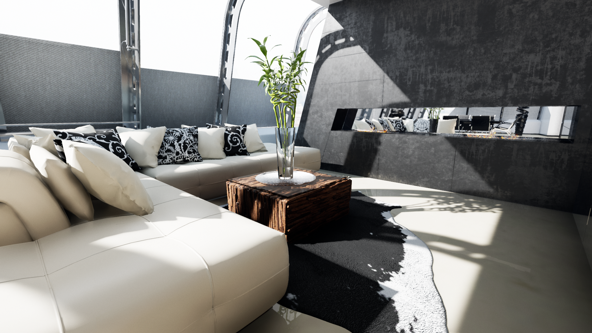
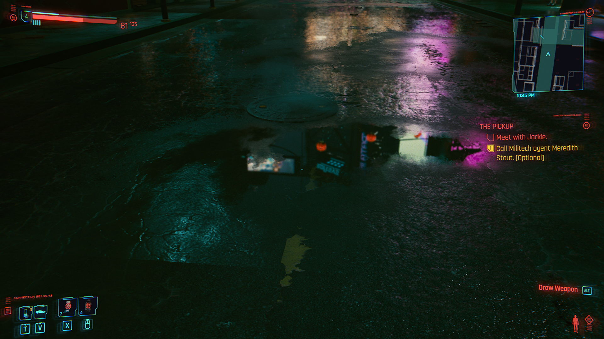
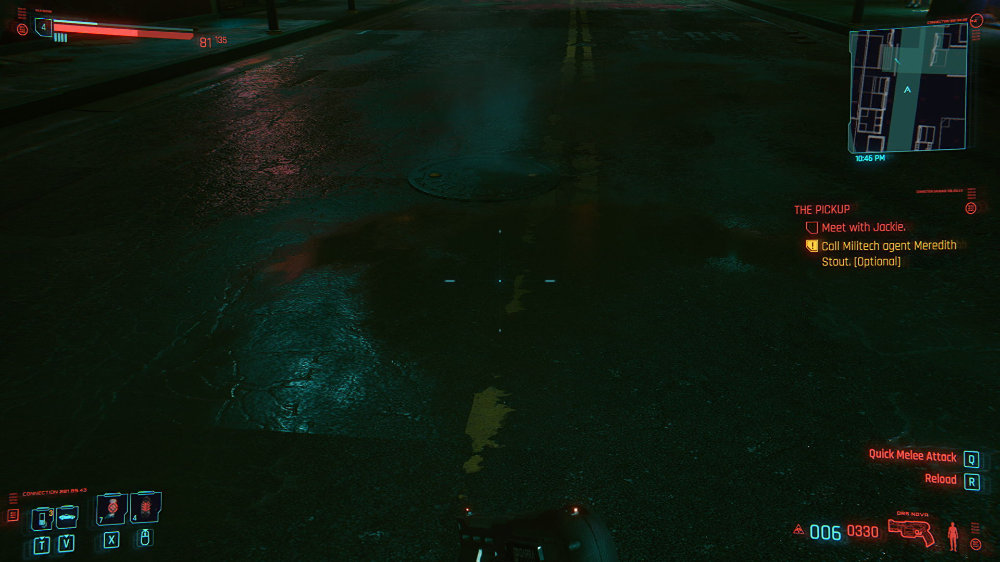
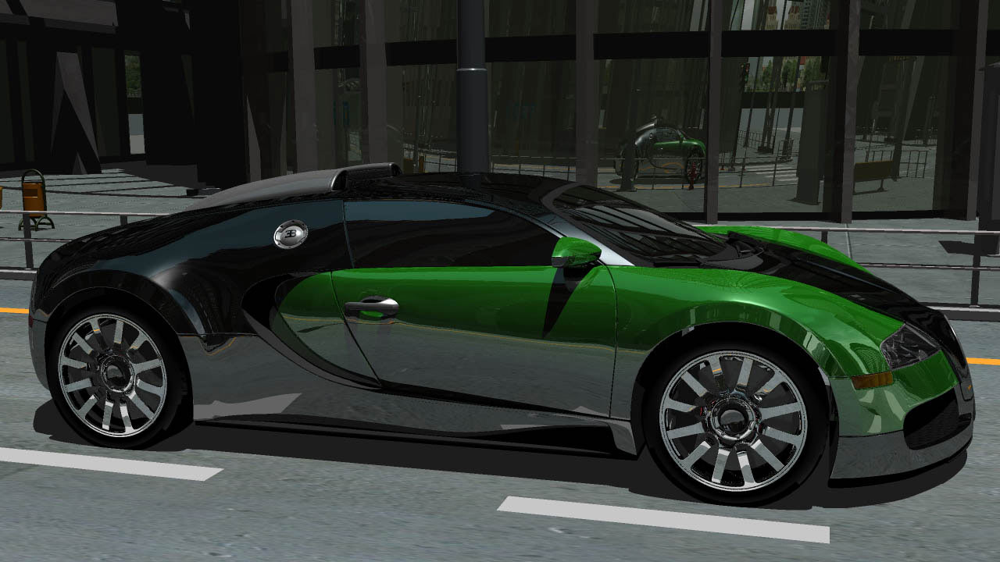
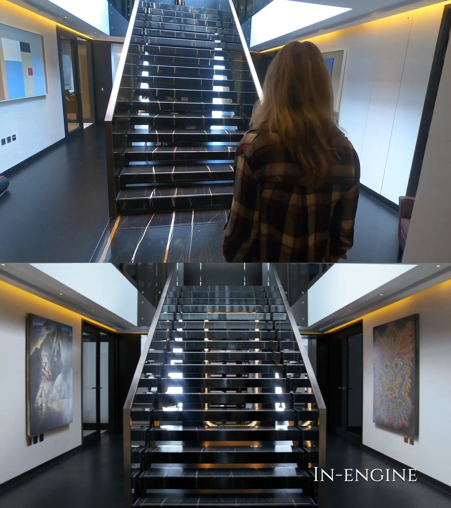

Most photos need to be enlarged to notice subtle details.

An example of hard (left) vs soft (right) shadows.(2) Notice how soft shadows look more realistic compared to the sharply defined hard shadows.

Render showing reflections on balls of differing properties(5)

More complex example of how raytracing works and rays are created.
Each hit/intersection creates a new ray. (15)

Battlefield V comparison of no raytracing (left) vs raytracing (right).(6) Notice how the sides of the building are reflected on the puddles
instead of the puddles looking muddy/dark or having baked reflections(leftmost puddle).

Reflections due to raytracing.(4) Really detailed reflections depending on the angle of viewing
instead of being the same regardless of angle.

Photorealistic raytraced room. Notice the subtle refraction of light on the vase,
the individual shadows of each pillow and how they are also reflected on the fireplace mirror.(8)
Raytraced animation.(9) Notice how the objects are reflected on the floor
and on the surface of other objects and the refractions that happen among them.

Cyberpunk 2077 on Raytracing Ultra settings.(10) The lights are reflected on the wet street and the puddle.

Cyberpunk 2077 on Ultra settings without raytracing.(10)
Real time raytracing from Star Wars Reflections demo.(13)

Raytracing render with accurate reflections depending on the shape of the surface.(14)

Ninja Theory's Project Mara raytracing demo comparison.(11)